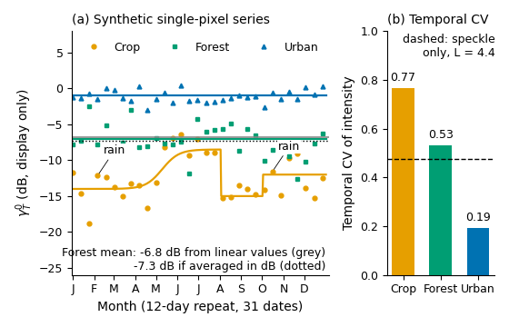

| SAR Concepts: Multitemporal Backscatter Stacks | |
A backscatter time series is a set of calibrated images of the same area, resampled onto one pixel grid, so that each pixel holds a sequence of values over time. Averaging over dates reduces speckle without losing spatial detail, and the temporal behaviour (stable, seasonal, abrupt) separates land covers and reveals change. Both need every date acquired and processed the same way, and statistics computed in linear units.
Each date k gives a value γk per pixel, ideally terrain-flattened gamma nought γ0T (Small 2011) in linear power (see Radiometry and Radiometric terrain correction). Each value is the true backscatter times unit-mean speckle, so even a stable pixel fluctuates. A forest is nearly constant, a crop field follows its growing cycle, and a building stays bright and steady, with a CV below the speckle floor, because a dominant scatterer does not produce fully developed speckle (Figure 1).

Figure 1. Synthetic data, for illustration. (a) One year of 12-day acquisitions (31 dates) for a crop, a forest and an urban pixel. Lines: the assumed true γ0T; markers: the same values times Gamma-distributed speckle with ENL 4.4 (crop, forest; the ENL of a Sentinel-1 GRDH product) or 30 (urban, a stable dominant scatterer). Two rain events raise the bare-soil crop pixel. For the forest pixel, the mean of the dB values lies about 0.5 dB below the mean taken in linear units. (b) Temporal coefficient of variation of the intensity. The dashed line is the value for speckle alone, 1/√4.4 = 0.48.
Use one sensor mode and, unless you composite on purpose (below), one relative orbit: the same track gives the same incidence angle, look direction and layover or shadow pattern on every date (see Geometry). Process every date with the same chain, DEM, map projection and pixel spacing (see the GRD to terrain-flattened backscatter workflow). Terrain-corrected products are put on one grid by resampling through their geocoding; products in radar geometry need the chain in Coregistration.
For N dates of one pixel the temporal mean γm, standard deviation s and coefficient of variation (CV) are
γm = (1/N) · Σk γk
s = [ (1/N) · Σk (γk − γm)2 ]1/2, CV = s / γm
Compute all of them in linear units. The mean of dB values is the logarithm of the geometric mean and is biased low by 10 · log10(e) · (ψ(L) − ln L), where ψ is the digamma function: −2.5 dB for one look, −0.5 dB at L = 4.4.
Even after terrain flattening, a slope seen in foreshortening from one pass has coarse local resolution, while the opposite pass resolves it well. Small (2012) combines γ0T images from several tracks by weighting each one with the inverse of its normalised local illuminated area Ai:
γC = Σi (γi / Ai) / Σi (1 / Ai)
The best-resolved view dominates each pixel, and layover or shadow in one track is filled from another. Within a single track the weights barely change from date to date, and the composite is close to the plain temporal mean.
A time series records every cause of backscatter change (see also Change detection):
CreateStack, Radar > Coregistration > Stack Tools) puts bands of several
products on the Reference grid (projection and pixel spacing; Minimum/Maximum change the extent) as <band>_ref_<date> and
<band>_sec<n>_<date> (date as ddMMMyyyy). For terrain-corrected
input the dialog sets Initial Offset Method to Product Geolocation and Resampling Type to
BISINC_5_POINT_INTERPOLATION; in a graph or GPT set them yourself (operator defaults: Orbit, NONE). Output Extents defaults to Master (the Reference footprint);
Minimum and Maximum require a resampling type other than NONE.alignToStandardGrid (graph and GPT parameter only, default false) snaps the
output grid to a fixed origin, so products with the same projection and pixel spacing share pixel edges.Stack-Averaging, Radar > Coregistration > Stack Tools) offers Mean
Average (default), Minimum, Maximum, Standard Deviation and Coefficient of Variation (no median), one output band
per band name without the _ref/_sec suffix, e.g. Gamma0_VV. Its Coefficient of Variation is the population standard deviation divided by the mean of the input values (about 0.48 for a stable intensity pixel at
L = 4.4).Multitemporal-Compositing, Radar > Radiometric) implements
the weighting above. A_i is the simulatedImage band of Terrain Flattening (Output Simulated Image,
off by default), which must be carried through Terrain Correction and Create Stack. The input must be a
calibrated, map-projected, coregistered stack. It has no parameters and writes one band per Reference band,
named without the _ref suffix. A date is skipped where its value is no-data, zero or NaN, or its area
is not positive. Stack only the backscatter and simulatedImage bands: any other band, a layover mask
for example, is composited too.Multi-Temporal-Speckle-Filter) applies the filter of
Quegan et al. (2000), extended to correlated channels by Quegan and Yu (2001): it keeps each date's local mean and
averages the speckle across dates (see Speckle). REACTIV Change Detection
(Colin Koeniguer and Nicolas 2020) colour-codes the temporal CV (of amplitude, about half the intensity CV of
Figure 1) and the date of the maximum; RPCA Change Detection (Schwartz et al. 2020) separates a stable
background from sparse changes. Their settings are in Change detection.layoverShadowMask in Terrain Correction and mask
those pixels.